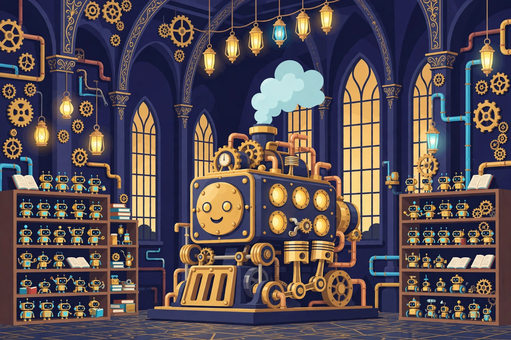

Welcome to the Engine Hall — lanterns lit, gears turning, and every engine on its shelf.
Meet Lumen the Lantern, the mascot of this world.
The Signature AI is the network’s flagship engine site: Signature Llama v2, with 125 tool libraries in the Signature Llama Database and a vault of engine sources. The guide here answers from those 125 libraries.
Two working tools, right here on the page. Each one says what it does and what it cannot do. Neither tool reaches the live web, and neither one needs a key.
Enter a word count to get an estimated token count, at about 1.3 tokens per word (a stated estimate).
Words:
Search the 125 tool libraries on this page by name or ID. Shows up to 10 matches.
Search:
Designs, printables, and demos — free, downloadable, usable on the page. Every product is labeled Signature or Fun. Nothing here is for sale.
A set of printable cards, one per tool library in the sample, with its name, category, and functions.
Making: print the printable file on card, cut out the cards, and deal three to plan a tool-set build.
A paper badge with a generated engine name, to wear while building.
Making: print the printable file, write in a generated engine name from the generator, and pin it on.
A bookmark in the shape of an open gear-book, in the Engine Hall style.
Making: print the printable file on card, cut out the bookmark, and keep it in a book.
Download all product lines as a printable (text)
Lumen the Lantern once lit the whole Engine Hall with a single match and found, on the last shelf, an engine about a lantern. It was filed under "L". (Fun — a made-up tale, not a record.)